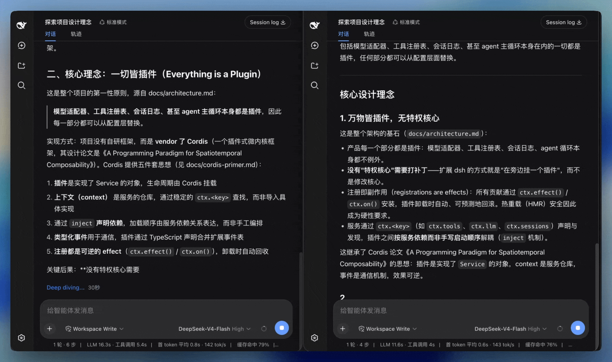

DeepSeek Harness（dsh）社区插件 —— 丝滑流式渲染：打字机跟随模型速率、Markdown 边流边渲染、换行滑入、不闪烁。
A community plugin for the DeepSeek Harness (dsh) Web UI — silky streaming: arrival-tracking typewriter reveal, live Markdown rendering, glide-in wraps, zero flicker.
社区项目，非 DeepSeek 官方发行的一部分。Community project, not part of the official DeepSeek distribution. MIT License.

文字按 token 到达速率出现，突发不倾倒、慢流不卡顿。Reveal tracks the model's arrival rate.
代码块、强调等在流式中实时渲染，没有纯文本尾巴再换排版的交接。Markdown renders live, no plain-text swap.
新行与增长的工具卡片滑入视野，不再把对话往上顶一格。New lines glide in.
上翻即松手，回到底部才继续跟随。Scroll stays yours; follow resumes at the bottom.
工具卡片、模型重试、workflow 共用同一套跟随。The whole turn moves together.
支持 prefers-reduced-motion；低帧率时自动暂停。Backs off for reduced motion and low fps.
pnpm dsh plugin --profile web add github:Laplace-bit/dsh-smooth-stream首次 add 失败是正常的：pnpm ≥10 会拦截 prepare 脚本，按提示把 dsh-smooth-stream 加入 ~/.dsh/profiles/web/pnpm-workspace.yaml 的 onlyBuiltDependencies，再执行一次同一条命令。然后 pnpm dsh web 启动，Host 日志出现 [dsh-smooth-stream] plugin loaded! 即成功。
preset | 手感 / Feel |
|---|---|
realtime | 更贴模型到达 / Keeps closer to the model |
balanced | 默认 / Default |
silky | 缓冲更大，追上更慢 / More buffer, slower catch-up |
maxScrollSpeedPxPerSec（默认 1000）限制滚动速度上限，避免首次大滞后时瞬移。
DeepSeek Harness（dsh）的社区插件，为 Web 对话提供丝滑流式渲染：打字机跟随模型速率、Markdown 边流边渲染、换行滑入、不闪烁。
在 DeepSeek Harness 源码目录运行 pnpm dsh plugin --profile web add github:Laplace-bit/dsh-smooth-stream，按上面的 pnpm 授权说明重跑一次即可。
No — it is a community plugin for the DeepSeek Harness (dsh) Web UI, MIT-licensed on GitHub, and not part of the official DeepSeek distribution.
支持。系统开启减少动态效果时直接显示完整文本，不接管跟随；帧率低于 30 fps 且回复在屏外时揭示自动暂停。
Currently the plugin installs from GitHub via dsh plugin add github:Laplace-bit/dsh-smooth-stream. Watch the repository for npm availability.